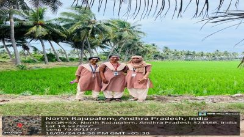
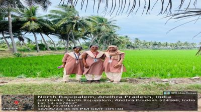

WEEKLY REPORT
WEEK- 1 (From 15-05-24 to 19-05-24)
Objective of the Activity Done: Utilization Of Electricity by Farmers and Related Issues
Detailed Report:
Day 1:
- In order to start the project
- Studied the guidelines of the project.
- Understood the inclusion of Community Service project in the curriculum.
- Pre-planned the Week-1 schedule of the project.
- Understood the changes come in the students behaviour after CSP.
Day 2:
- I have selected the topic “UTILISATION OF ELECTRICITY TO FARMERS AND RELATED ISSUES":
- >I have started searching the suitable place for my project.
- >In the process of selecting place, I came to know what are essential requirements required for selecting the suitable place for the project.
Day 3:
- As a part of my project,
- >I have visited nearby sachivalayam and met VRO.
- >Took permission from VRO for smooth conduct of my project.
- >I have explained him about my project.
Day 4:
- I have surveyed some farmers and questioned them on utilisation of electricity to farmers:
- >How much electricity is needed for a day?
- >Is electricity provided free?
- >Does free electricity come under government?
Day 5:
- >I have observed the work done by the farmers on the field.
- >I started asking related question about providing electricity
- >I got an idea about providing electricity to farmers.
- >I got the real time experience of farming.
Day 6:
- As a part of final day of the day of the week:
- >I seeked an information about the need of electricity in villages to farmers.
- >I got an awareness how to interact with people.
- >I gained knowledge about our project and known how to interact with people.


 
